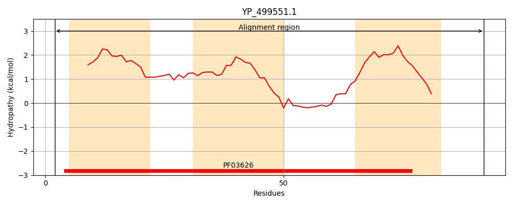
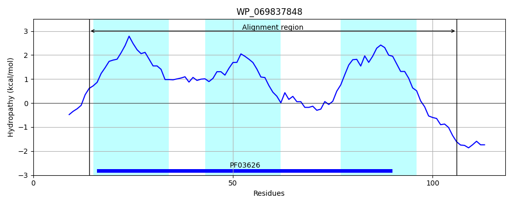
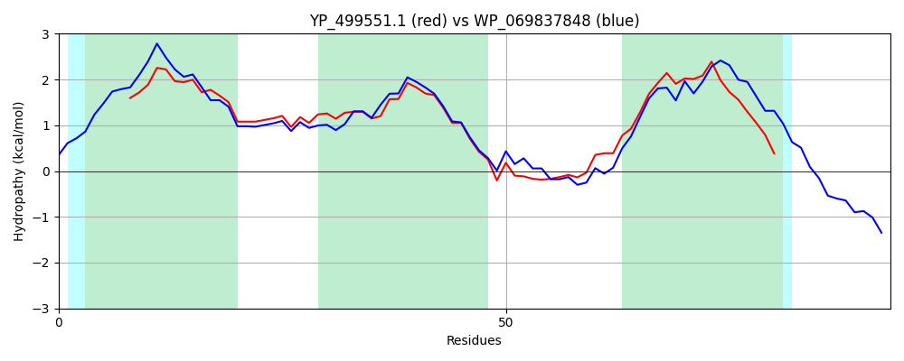

Hit Accession: WP_069837848
Hit TCID: 3.D.4.5.2
Hit Description: gnl|BL_ORD_ID|21366 gnl|TC-DB|WP_069837848|3.D.4.5.2 cytochrome aa3 quinol oxidase subunit IV [Bacillus subtilis]
Mach Len: 93
e:0.000000
Query TMS Count : 3
Hit TMS Count: 3
TMS-Overlap Score: 2.850000
Predicted Substrates:CHEBI:5584;hydron
BLAST Alignment:
| Protein Hydropathy Plots: | |
|---|---|
|  |  |
Pairwise Alignment-Hydropathy Plot: | |
|  | |